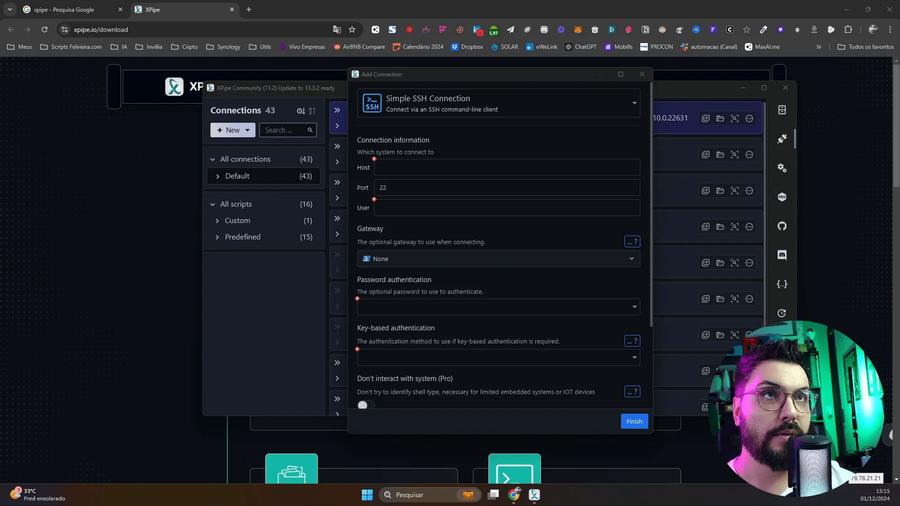
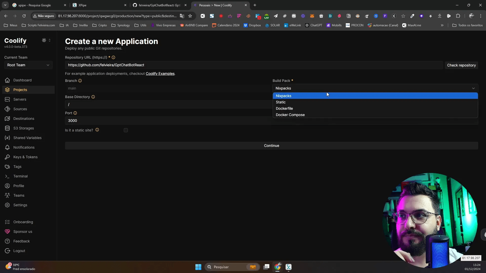
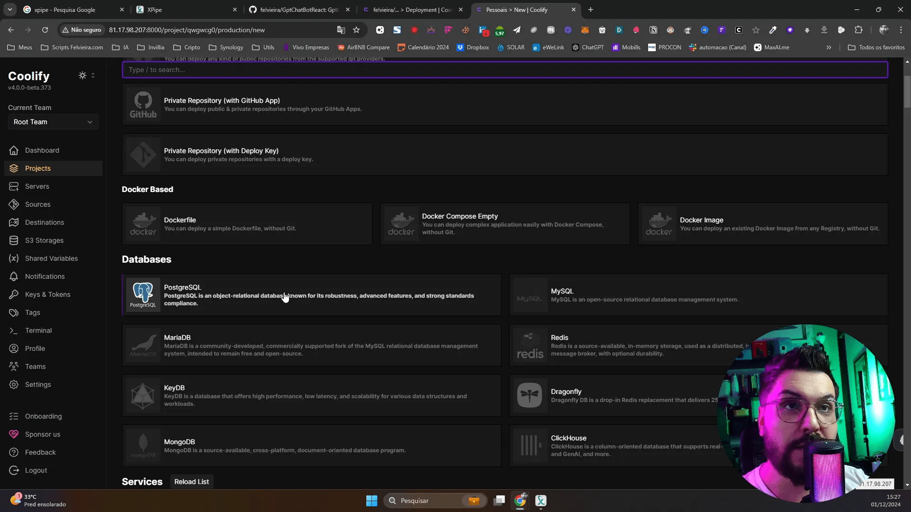
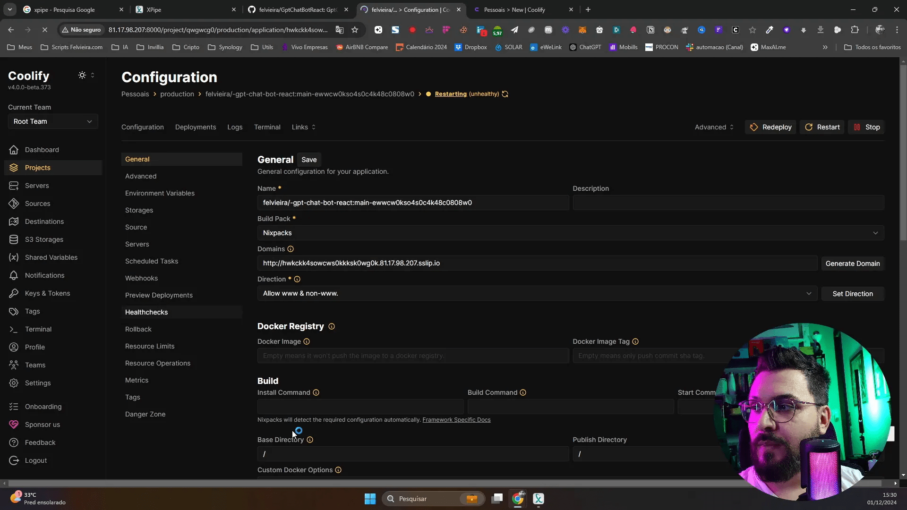
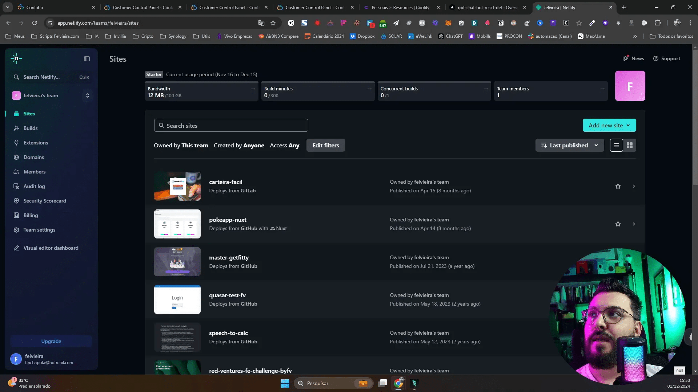
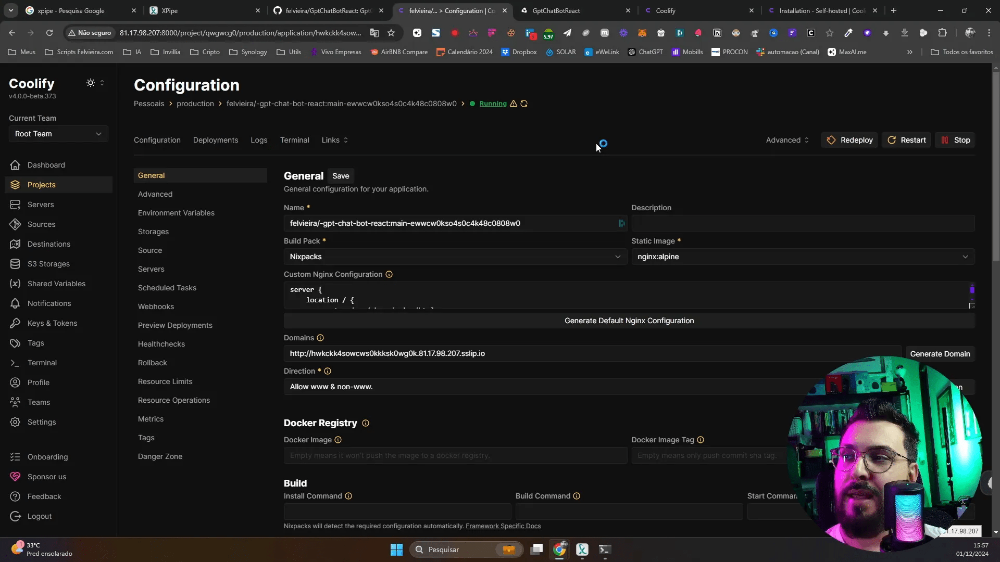

Aprenda a implantar suas aplicações web de forma simples e eficiente utilizando a plataforma Coolify. Neste guia, abordaremos desde a configuração de uma VPS até o deploy automatizado com GitHub, permitindo que você leve suas aplicações ao ar de maneira profissional.
🌐 Introdução ao Deploy de Aplicações Web
O deploy de aplicações web é uma etapa crucial no desenvolvimento, onde sua aplicação se torna acessível ao público. Neste processo, você precisará de um servidor, que pode ser uma VPS (Virtual Private Server), para hospedar seu aplicativo. O Coolify é uma ferramenta poderosa que simplifica esse processo, permitindo que você gerencie seus projetos de forma eficiente.
Com o Coolify, você pode automatizar o deploy, integrar com repositórios de código e gerenciar serviços adicionais, como armazenamento de imagens. Isso é especialmente útil para quem deseja escalar suas aplicações ou manter um fluxo de trabalho mais organizado.
🖥️ Escolhendo uma VPS para o Deploy
Escolher a VPS certa é fundamental para o sucesso do seu deploy. Existem várias opções disponíveis no mercado, cada uma com suas características específicas. O ideal é optar por uma VPS que ofereça um bom equilíbrio entre preço e desempenho.
- Recursos: Verifique a quantidade de CPU, RAM e armazenamento oferecidos.
- Localização: Escolha um servidor que esteja próximo ao seu público-alvo para melhorar a velocidade de acesso.
- Suporte: Um bom suporte técnico pode ser decisivo em momentos de necessidade.
- Custo: Compare preços e veja se há promoções ou descontos disponíveis.
💳 Criando uma Conta no PayPal e Comprando uma VPS
Para adquirir uma VPS, você precisará de uma conta no PayPal. O PayPal é uma forma segura e amplamente aceita de pagamento. O processo de criação de conta é simples:
- Acesse o site do PayPal e clique em “Criar conta”.
- Escolha o tipo de conta que deseja criar (pessoal ou comercial).
- Preencha suas informações e siga as instruções para verificar sua conta.
Após criar sua conta, você pode acessar o site da VPS escolhida e seguir as instruções para realizar a compra. É importante verificar se a VPS escolhida oferece suporte a sistemas operacionais como Ubuntu, pois isso facilitará a instalação de softwares necessários.
🔗 Instalando o Cliente SSH e Conectando à VPS
Para conectar-se à sua VPS, você precisará de um cliente SSH. Existem várias opções disponíveis, mas um dos mais populares é o PuTTY. A instalação é simples:
- Baixe o PuTTY do site oficial.
- Instale o programa em seu computador.
- Abra o PuTTY e insira o endereço IP da sua VPS.
- Escolha o tipo de conexão SSH e clique em “Open”.
Assim que a conexão for estabelecida, você precisará inserir seu nome de usuário e senha que foram configurados durante a criação da VPS.

⚙️ Instalação do Coolify na VPS
Com a conexão SSH estabelecida, o próximo passo é instalar o Coolify na sua VPS. O processo é bastante direto. Você deverá seguir os passos abaixo:
- Atualize os pacotes da sua VPS com o comando:
sudo apt update && sudo apt upgrade. - Baixe o script de instalação do Coolify e execute-o.
Após a instalação, você poderá acessar a interface do Coolify através do navegador, utilizando o IP da sua VPS e a porta correspondente.
📁 Configurando Projetos no Coolify
Uma vez que o Coolify esteja instalado, você pode começar a configurar seus projetos. A interface é intuitiva, permitindo que você adicione repositórios de código de forma rápida.
- Clique em “Criar Novo Projeto”.
- Selecione se deseja usar um repositório público ou privado.
- Insira a URL do repositório e siga as instruções para configurar as variáveis de ambiente necessárias.
O Coolify também permite que você escolha o tipo de aplicação que está implantando, seja ela um projeto em Node.js, React ou uma página estática. Isso facilita a configuração das dependências e otimiza o processo de build.

🚀 Fazendo o Deploy de Aplicações e Serviços
Realizar o deploy de suas aplicações é uma etapa essencial que garante que seu projeto esteja acessível e em funcionamento. Com o Coolify, você pode implementar uma variedade de serviços, incluindo bancos de dados como PostgreSQL, MySQL, e Redis, entre outros.
Para começar, basta selecionar o serviço desejado na interface do Coolify. A configuração é simplificada e geralmente requer apenas alguns cliques. Assim que você escolher o serviço, ele será provisionado automaticamente, permitindo que você se concentre no desenvolvimento.

Principais Serviços Disponíveis
- PostgreSQL: Ideal para aplicações que necessitam de um banco de dados relacional robusto.
- MySQL: Uma escolha popular para aplicações web que requerem um banco de dados leve.
- Redis: Perfeito para caching e armazenamento de dados em memória.
- WordPress: Para quem deseja criar blogs ou sites de conteúdo de forma rápida.
Esses serviços já vêm configurados com as credenciais de acesso apropriadas, o que facilita a implementação. Você só precisa clicar e seguir as orientações para configurar seu banco de dados ou serviço desejado.
🔧 Configurando Variáveis de Ambiente
As variáveis de ambiente são fundamentais para a configuração de suas aplicações. Elas permitem que você armazene informações sensíveis, como chaves de API, sem expô-las no código-fonte. No Coolify, a configuração de variáveis de ambiente é simples e direta.

Passos para Configurar Variáveis de Ambiente
- Acesse o painel de controle do seu projeto no Coolify.
- Localize a seção de variáveis de ambiente.
- Adicione novas variáveis, inserindo o nome e o valor correspondente.
- Salve as alterações e reinicie seu serviço para que as novas configurações entrem em vigor.
É importante lembrar que, ao adicionar variáveis de ambiente, você deve garantir que os valores estejam corretos. Por exemplo, se sua aplicação depende da API da OpenAI, você deve inserir a chave de API correspondente.
🌍 Deploy em Plataformas como Vercel e Netlify
Além do Coolify, existem outras plataformas populares para realizar o deploy de aplicações web, como Vercel e Netlify. Ambas oferecem integração com GitHub, o que facilita o processo de deploy contínuo.
Essas plataformas são especialmente eficazes para projetos front-end, como aplicações React ou sites estáticos. Elas oferecem planos gratuitos com algumas limitações, que podem ser suficientes para projetos menores.

Comparação entre Vercel e Netlify
- Vercel: Famosa pela sua simplicidade e integração com Next.js. Ideal para aplicações que utilizam React.
- Netlify: Oferece uma ampla gama de funcionalidades, incluindo formulários e funções serverless. Excelente para sites estáticos.
Para realizar o deploy em qualquer uma dessas plataformas, você precisa criar uma conta, conectar seu repositório do GitHub e seguir as instruções para configurar o ambiente. A adição de variáveis de ambiente também é suportada, permitindo que você mantenha suas credenciais seguras.
📝 Conclusão e Próximos Passos
O processo de deploy pode parecer complexo inicialmente, mas com ferramentas como Coolify, Vercel e Netlify, ele se torna muito mais gerenciável. Você agora tem as informações necessárias para realizar o deploy de suas aplicações de maneira eficaz.
Nos próximos passos, considere explorar mais sobre as funcionalidades oferecidas por essas plataformas. Aprenda sobre práticas recomendadas para gerenciar suas variáveis de ambiente e como monitorar o desempenho de suas aplicações.

❓ FAQ
Qual é a diferença entre Coolify, Vercel e Netlify?
Coolify é uma solução mais voltada para o gerenciamento de servidores e serviços, enquanto Vercel e Netlify são plataformas otimizadas para o deploy de aplicações front-end e sites estáticos.
É necessário pagar para usar Vercel e Netlify?
Ambas as plataformas oferecem planos gratuitos com limitações. Para projetos maiores ou que requerem mais recursos, planos pagos estão disponíveis.
Como posso gerenciar variáveis de ambiente no Coolify?
No Coolify, você pode facilmente adicionar e editar variáveis de ambiente através do painel de controle do seu projeto. Basta acessar a seção correspondente e seguir as instruções.